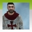
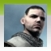

Assassin's Creed
Ubisoft Entertainment
Original Release November 13, 2007
Release April 9, 2008

Violence
Strong Language
Blood

The setting is 1191 AD. The Third Crusade is tearing the Holy Land apart. You, Altair, intend to stop the hostilities by suppressing both sides of the conflict. You are an Assassin, a warrior shrouded in secrecy and feared for your ruthlessness. Your actions can throw your immediate environment into chaos, and your existence will shape events during this pivotal moment in history.
Full 100% Synchronization Guide and Walkthrough for the Assassin's Creed™: Director's Cut Video Game. This guide can also help with Assassin's Creed (2007). Do note that trophies and achievements only exist for the Xbox 360 version of the game.
Playing the game in this order is merely just suggested; I do not force you to play in this order, but it is highly recommended.
This guide is compiled into chapters in accordance with pivotal moments in the storyline of Assassin's Creed.
 Spoiler Warning: Plot details, ending details, or both are in the text and images which follows
Spoiler Warning: Plot details, ending details, or both are in the text and images which follows
Memory DNA Timeline
Because Assassin's Creed does not give you clear objectives for a single memory, you are free to approach an assassination memory in any way you want, although it is recommended to stay in stealth like a true assassin, unless the circumstances are dire. For the first two memory blocks, 2 Investigations are needed to access the Assassination Memory; onwards, 3 Investigations would be needed for each Assassination Memory. It is recommended to complete all Investigations for full synchronization. Climb a view point to locate investigations. You can click the Memory Blocks and the memories inside the Additional Memories for Youtube walkthroughs on good stratagies and/or locations for collectibles. It is recommended to synchronize with all viewpoints, save all citizens, and collect all of the additional memories collectibles as you visit new districts to complete each Assassination Memory rather than save everything for after completion of the game. Saving all citizens can help with Assassination Memories when the circumstances fit...
| Memory Block | Setting | Memory | Progress | ||
|---|---|---|---|---|---|
| Welcome to the Animus | |||||
| Memory Block 1 | Solomon's Temple - Jerusalem | Acquisition | |||
| Failure | |||||
| Guardian | |||||
| Glory |  Hero of Masyaf | ||||
| Memory Block 2 | Traitor - Masyaf | Investigation | |||
| Investigation | |||||
| Investigation | |||||
| Knowledge | The Punishment for Treason | ||||
| Tamir - Damascus | Investigation | ||||
| Investigation | |||||
| Investigation | |||||
| Investigation | |||||
| Investigation | |||||
| Investigation | |||||
| Knowledge | |||||
| Assassination | The Blood of a Corrupt Merchant | ||||
| View Points | 9 / 9 | ||||
| Save Citizens | 12 / 12 | ||||
| Memory Block 3 | Garnier de Naplouse - Acre | Investigation | |||
| Investigation | |||||
| Investigation | |||||
| Investigation | |||||
| Investigation | |||||
| Investigation | |||||
| Knowledge | |||||
| Assassination | The Blood of a Doctor | ||||
| View Points | 11 / 11 | ||||
| Save Citizens | 12 / 12 | ||||
| Talal - Jerusalem | Investigation | ||||
| Investigation | |||||
| Investigation | |||||
| Investigation | |||||
| Investigation | |||||
| Investigation | |||||
| Knowledge | |||||
| Assassination | The Blood of a Slave Trader | ||||
| View Points | 9 / 9 | ||||
| Save Citizens | 12 / 12 | ||||
| Memory Block 4 | Abu'l Nuqoud - Damascus | Investigation | |||
| Investigation | |||||
| Investigation | |||||
| Investigation | |||||
| Investigation | |||||
| Investigation | |||||
| Knowledge | |||||
| Assassination | The Blood of the Merchant King | ||||
| View Points | 10 / 10 | ||||
| Save Citizens | 10 / 10 | ||||
| William of Montferrat - Acre | Investigation | ||||
| Investigation | |||||
| Investigation | |||||
| Investigation | |||||
| Investigation | |||||
| Investigation | |||||
| Knowledge | |||||
| Assassination |  The Blood of the Liege-Lord | ||||
| View Points | 11 / 11 | ||||
| Save Citizens | 9 / 9 | ||||
| Majd Addin - Jerusalem | Investigation | ||||
| Investigation | |||||
| Investigation | |||||
| Investigation | |||||
| Investigation | |||||
| Investigation | |||||
| Knowledge | |||||
| Assassination | The Blood of a Regent | ||||
| View Points | 6 / 6 | ||||
| Save Citizens | 8 / 8 | ||||
| Memory Block 5 | Sibrand - Acre | Investigation | |||
| Investigation | |||||
| Investigation | |||||
| Investigation | |||||
| Investigation | |||||
| Investigation | |||||
| Knowledge | |||||
| Assassination | The Blood of a Teutonic Leader | ||||
| View Points | 9 / 9 | ||||
| Save Citizens | 7 / 7 | Defender of the People: Acre | |||
| Jubair Al Hakim - Damascus | Investigation | ||||
| Investigation | |||||
| Investigation | |||||
| Investigation | |||||
| Investigation | |||||
| Investigation | |||||
| Knowledge | |||||
| Assassination | The Blood of a Scribe | ||||
| View Points | 7 / 7 | ||||
| Save Citizens | 8 / 8 | Defender of the People: Damascus | |||
| Memory Block 6 | Robert de Sable - Jerusalem | Investigation | |||
| Investigation | |||||
| Investigation | |||||
| Investigation | |||||
| Investigation | |||||
| Investigation | |||||
| Knowledge | |||||
| Assassination | |||||
| View Points | 7 / 7 | ||||
| Save Citizens | 6 / 6 | Defender of the People: Jerusalem | |||
| Assassination | Disciple of the Creed | ||||
| The Blood of a Nemesis | |||||
| Memory Block 7 | Al Mualim - Paradise | Assassination | The Eagle and The Apple - 1191 | ||
| Visions of the Future | |||||
| Additional Memories | Ribonucleic Memory | View Points | 12 / 12 | Fearless | |
| Kill All Templars | 60 / 60 | Personal Vendetta | |||
| Assassins Flags | 20 / 20 | Keeper of the Creed | |||
| Hospitalier Flags | 33 / 33 | Keeper of the 8 Virtues | |||
| Templar Flags | 34 / 34 | Keeper of the Order | |||
| Teutonic Flags | 33 / 33 | Keeper of the Black Cross | |||
| Saracens Flags | 100 / 100 | Keeper of the Crescent | |||
| King Richard Flags | 100 / 100 | Keeper of the Lions Passant | |||
| Jerusalem Crosses | 100 / 100 | Keeper of the Four Gospels |
The following achievements and trophies can be achieved during one or multiple playthroughs of the game, or after Story Completion. These are discussed in a separate section as these are may or may not naturally happen during first playthrough of the game. Do note that trophies only exist for the Xbox 360 Version of the Game and do not exist on PC or Playstation Consoles.
Absolute Symbiosis
Desmond and Altair have been completely synchronized.
This achievement can come naturally as your Synchronization with Altair increases for every few objectives that you complete. These objectives include saving citizens, synchronizing with view points, and getting your ranks reinstated by Al Mualim after each Assassination Memory back in Masyaf. Keep completing objectives throughout all memory blocks and this achievement will show up eventually.
Hungerer of Knowledge
See 85% of all the memory glitches.
This achievement can come naturally as you view glitches during a scene. Press any button when you see a glitch during a scene to view it in another perspective. Keep viewing glitches during any scene you encounter and this achievement will eventually pop up.
Conversationalist
Go through every dialog with Lucy.
This achievement is easily missable and can be avoided. To get this achievement, you have to participate in all dialogue with Lucy. At the end of each memory block, Desmond can talk with Lucy before resting in the bedroom. Exhaust all possible dialogue with Lucy until she asks you to go rest. Do this every day after the end of a memory block and you will unlock the achievement by the end of memory block 6.
Eagle's Will
You remain undefeated for over 100 battles.
This achievement can come naturally as you play the story and kill guards during a fight. To get this achievement quicker, run around the city and kill every guard you see in a fight. You do not have to do this in one go, you can stop and come back later as your progress will be saved.
Eagle's Flight
Survival at its best, for over 10 minutes, nothing was able to hinder your flight.
This achievement can come naturally as you play the story and engage in combat with guards and/or enemies. To get this achievement, you have to last 10 minutes in open conflict. The easy way to do this is by blocking a single guard's attacks continuously or let guards chase you around the map until the achievement pops up.
Eagle's Prey
Over 100 city guards have fallen to your hunt.
This achievement can come naturally as you play the story and perform assassinations with your hidden blade. To get this achievement you have to assassinate 100 guards. This is most easily done by assassinating guards you see roaming around in the city and on the rooftops. You do not have to do this in one go, you can stop and come back later as your progress will be saved.
Blade in the Crowd
Like a Blade in the Crowd, your target never knew his death laid wait within his very shadow.
This achievement can come naturally as you play the story and go for stealth assassinations on your main targets of the memory block. To get this achievements you essentially have to kill one of your main targets like a true assassin and stealth assassinate them without letting them know that they are about to die. You can stealth assassinate Tamir, Garnier de Naplouse, William of Montferrat, Majd Addin, and Sibrand if you follow good strategies.
Eagle's Challenge
You were bold enough to challenge 25 soldiers in a single fight... and win.
This achievement can come naturally as you play the story and kill guards during a fight. To get this trophy you have to kill 24 guards in a single fight. The easy way to do this is during an assassination memory when you are faced against a lot of soldiers and the target, or you can also find groups of guards in the city, start a fight, and then keep gathering groups of guards. Keep killing guards until a few remain, then find another group of guards and have your opponents follow you, then rinse and repeat until the achievement shows up.
Eagle's Swiftness
Over 100 people have witnessed your deadly performance with a blade.
This achievement can come naturally as you play the story and perform counter kills on guards during a fight. To get this achievement you basically have to counter kill 100 people in a fight. You do not have to do this in one go, you can stop and come back later as your progress will be saved.
Eagle's Dive
Perform 50 Combo Kills in Fights.
This achievement can come naturally as you play the story and perform combo kills on guards during a fight. To get this achievement you basically have to combo kill 50 guards in a fight. You do not have to do this in one go, you can stop and come back later as your progress will be saved. The easiest way to do this is by using the training courtyard back in Masyaf, you can do it consecutively here until the achievement pops up.
Eagle's Talon
Over 50 people have felt the deadly sting of your blade.
This achievement can come naturally as you play the story and perform stealth assassinations on guards during a fight. To get this achievement you basically have to stealth assassinate 50 enemies. You do not have to do this in one go, you can stop and come back later as your progress will be saved.
Eagle's Dance
You've soared with the eagles and landed safely over 50 times.
This achievement can come naturally as you play the story and perform leaps of faith. To get this achievement you basically have to perform 50 leaps of faith by jumping from a high point into a stack of hay below. This can be easily done as you climb to viewpoints across all cities for 100% synchronization of all the View Point Memories.
The hands of a Thief
You've gathered quite a supply of throwing knives.
This achievement is easily missable and can be avoided. To get this achievement you have to pickpocket 200 throwing knives. You can pickpocket thugs for Throwing Knives, and can recognize them by their leather hood and knives at their belts. Make sure to get ranks reinstated by Al Mualim so your max capacity for throwing knives can be increased and therefore can steal more from thugs.
March of the Pious
Scholars know you well and have helped you over 20 times.
This achievement is easily missable and can be avoided. To get this achievement you have to use scholar blending 20 times. You can find groups of scholars to blend with when entering a city for the first time by saving citizens outside the premises first. You do not have to do this in one go, you can stop and come back later as your progress will be saved. To get this trophy quicker, you can blend in and out of the same group of scholars 20 times.
Eagle's Eye
Over 75 guards were felled by your knives.
This achievement can come naturally as you play the story and kill guards with throwing knives. To get this achievement you have to kill at least 75 guards with throwing knives. This is most easily done on rooftop guards and guards that aren't aware of your presence. You do not have to do this in one go, you can stop and come back later as your progress will be saved.
Enemy of the Poor
You managed to scare away 25 beggars. I hope you're proud of yourself.
This achievement is easily missable and can be avoided. To get this achievement you have to grab and throw 25 women harassers (yes, we do not believe in sexism here). During a memory or on free roam, you can sometimes find a beggar run up to you and harass you for food or money (it is typically women), in which you can grab them and then throw. You do not have to do this in one go, you can stop and come back later as your progress will be saved.
Gifted Escapist
The Merchants of the land now know you VERY well.
This achievement is easily missable and can be avoided. To get this achievement you have to jump through 20 merchant stands. You can do this during Informer Merchant Stand Destruction Challenge memories or during free roam. You do not have to do this in one go, you can stop and come back later as your progress will be saved. To get this trophy quicker, you can jump through the same merchant stand 20 times.